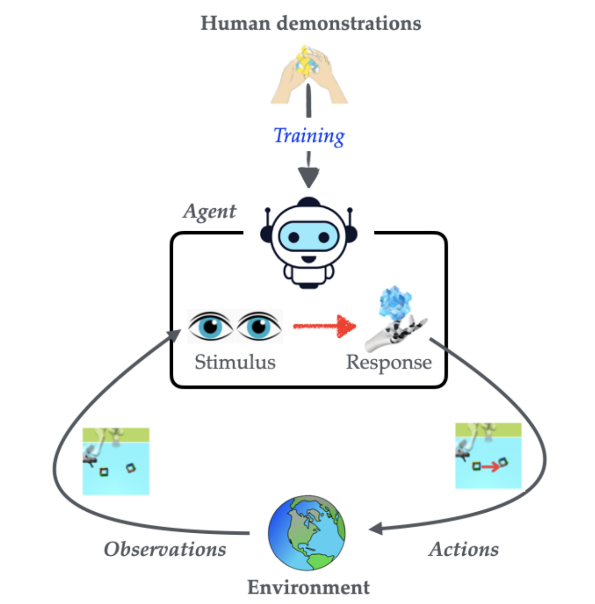
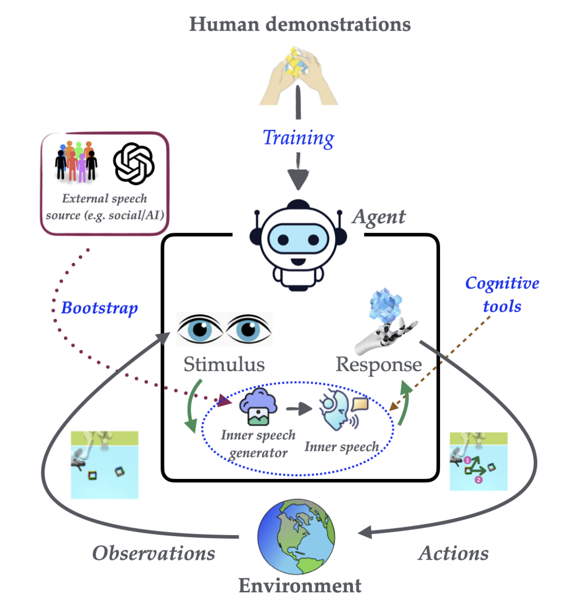
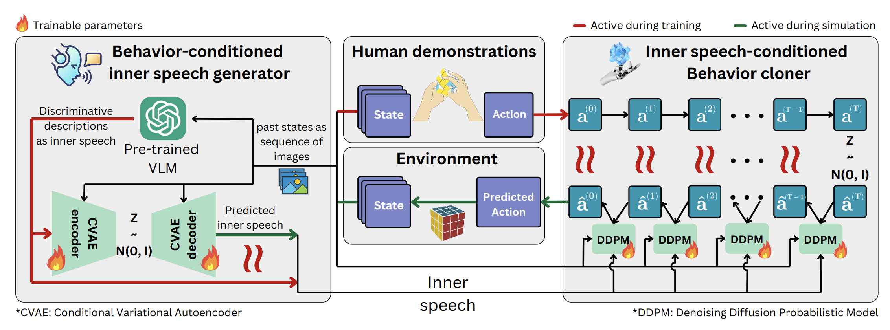
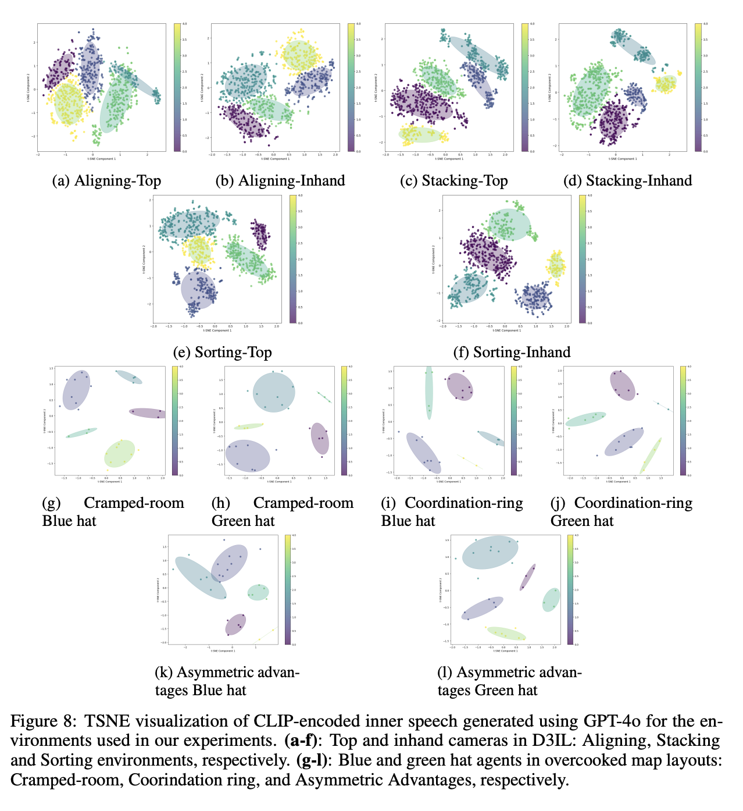
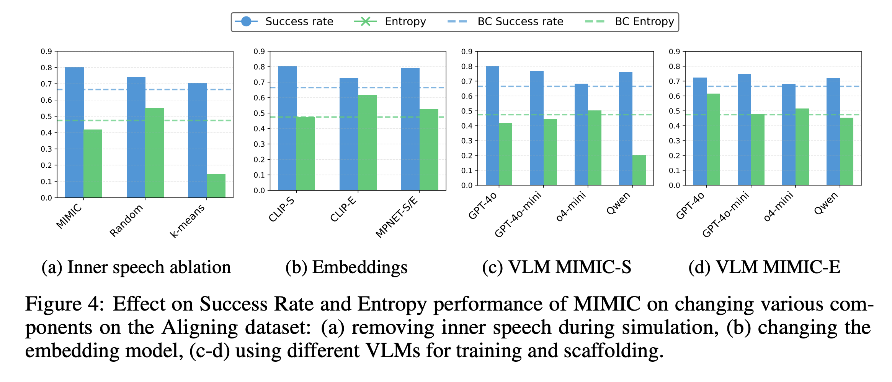
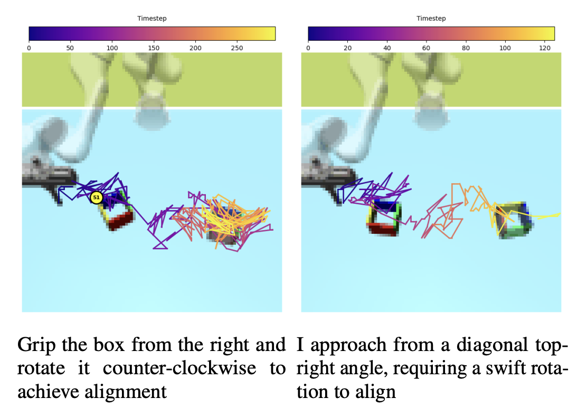

Inner Speech as Behavior Guides:
Steerable Imitation of Diverse Behaviors for Human-AI Coordination
of Technology
of Technology
University

(a) Behaviorist framework: Direct stimulus-response mapping

(b) Cognitive framework: Linguistically-mediated action selection
Figure: Contrasting theoretical frameworks for IL. (a) The behaviorist approach models human behavior as a direct mapping from environmental states to actions (st ↦ at), treating cognitive processes as opaque transformations. (b) The cognitive approach instantiated by MIMIC introduces inner speech as a mediational layer (st → mt → at), where mt represents linguistically-structured internal deliberation that enables behavioral diversity and contextual adaptation.
Abstract
Effective human-AI coordination requires artificial agents capable of exhibiting and responding to human-like behaviors while adapting to changing contexts. Imitation learning has emerged as one of the prominent approaches to build such agents by training them to mimic human-demonstrated behaviors. However, current methods struggle to capture the inherent diversity and non-Markovian nature of human behavior and lack the ability to steer behavior at inference time. Drawing inspiration from the theory of human cognitive processes, where inner speech guides action selection before execution, we propose MIMIC (Modeling Inner Motivations for Imitation and Control), a framework that uses language as an internal representation of behavioral intent.
MIMIC employs the novel use of vision-language models as linguistic scaffolding to train a conditional variational autoencoder capable of generating inner speech from observations. A diffusion-based behavior cloning policy then selects actions conditioned on current observations and the generated inner speech. MIMIC enables fine-grained steering of behavior at inference time by conditioning the agent on behavior-specific speech. Experiments across robotic manipulation tasks and human-AI collaboration games demonstrate that MIMIC significantly enhances both behavior diversity and fidelity to human demonstrations while enabling nuanced behavioral steering without training on additional demonstrations.
Method
Standard imitation learning maps states directly to actions, \(s_t \rightarrow a_t\), collapsing the reasoning that produced a demonstration into a single reflex. MIMIC instead inserts a linguistic layer — an inner speech variable \(m\) — between perception and action. Rather than modeling one averaged policy, we treat a human’s behavior as a mixture over intents and recover the intent explicitly:

Figure 2: Overview of MIMIC. A pre-trained vision-language model scaffolds inner speech by discriminating the distinct behaviors present in human demonstrations. We then jointly train (i) a DDPM-T diffusion behavior cloner conditioned on this inner speech and (ii) a VAE-based inner-speech generator conditioned on the recent history of states. At simulation time, inner speech is regenerated periodically from the agent’s own past actions to steer the behavior it produces next.
Why language as the internal representation?
MIMIC follows Vygotsky’s account of inner speech — internalized language that mediates between what we perceive and what we do. Three of its documented properties map directly onto three design choices in the framework:
Predicativity
Inner speech foregrounds relations and actions (“block them from the left”) rather than exhaustively naming objects — it encodes what to do, not what is merely present.
→ VLM-generated behavior descriptionsSemantic Condensation
Rich meaning is compressed into short, abbreviated forms. A verbose description collapses into a compact code that still carries the intent.
→ CVAE latent + annealed KLRegulatory Dynamics
Inner speech unfolds over time, organizing and re-planning ongoing behavior instead of firing once at the start.
→ Periodic re-generation every \(W\) stepsThe MIMIC pipeline
Scaffold inner speech from demonstrationsoffline · VLM
We do not have ground-truth inner speech, so we elicit it. Each demonstration \(\tau^{(i)} = (I_1, \ldots, I_T)\) is rendered as a short GIF and shown to a pre-trained vision-language model (GPT‑4o), prompted to “generate the inner thought process that describes the distinctive behavior shown.” This yields a natural-language description \(c^{(i)}\) that discriminates one behavioral style from another. We embed it with CLIP so the label lives in a shared vision-language space:
Inner-speech-conditioned behavior clonerdiffusion policy · DDPM-T
The policy is a transformer-based diffusion model (DDPM-T) that generates an action by iteratively denoising, conditioned on both the current state \(s\) and the inner speech \(m\). The state is embedded with a domain-specific encoder (a CNN for pixel observations, an MLP otherwise), inner speech through a small MLP, and the two are fused into the denoising transformer. Training is the standard denoising objective — predict the noise \(\epsilon\) that was added at diffusion step \(k\):
Behavior-conditioned inner-speech generatorCVAE
At deployment there is no VLM in the loop, so the agent must produce its own inner speech. A conditional VAE learns to do this from the recent history of behavior \(H_t = \{\, s_{t-W:t},\, a_{t-W:t-1} \,\}\). An encoder \(\Psi_{\mathrm{enc}}\) maps the CLIP-embedded inner speech into a latent \(z\), and a decoder \(\Psi_{\mathrm{dec}}\) reconstructs it from \(z\) and the history:
Inference — generate, regulate, and steerrollout · control
An episode starts with no inner speech, \(m_0 = 0\). Then, realizing regulatory dynamics, the agent refreshes its inner speech every \(W\) steps by sampling a latent from the history-conditioned distribution and decoding it — otherwise it holds the previous thought. Because the update is driven by the agent’s own recent states and actions, intent evolves coherently as the rollout unfolds:
Steering. Because inner speech is just language embedded in the CLIP space, a user can override it with any target behavior description \(B\) — e.g. “carefully navigate around the other agent to avoid collisions” — and the same trained policy adopts that style, with no additional demonstrations or fine-tuning:
Results
We organize our evaluation around five questions, spanning robotic manipulation (the D3IL benchmark) and human-AI collaboration (Overcooked). Throughout, we compare two inference-time variants of our method — MIMIC-S (success-leaning) and MIMIC-E (diversity/entropy-leaning) — against a strong diffusion behavior-cloning baseline (BC, a DDPM-T policy without inner speech).
Does MIMIC imitate diverse behaviors with high fidelity on the D3IL benchmark?
Yes. Across Aligning, Sorting, and Stacking (and their vision-based variants), MIMIC matches or exceeds the BC baseline on task success while generating substantially more diverse, human-like behavior (higher behavioral entropy). Crucially, its rollouts stay far closer to the human demonstration distribution — a much lower Wasserstein distance over both visited states and task-completion time — showing the gains are fidelity, not just randomness.
Table 1. MIMIC vs. BC (DDPM-T) on the D3IL benchmark.
| Environment | Model | Success rate ↑ | Distance ↓ | Entropy ↑ | State-wass ↓ | Time-wass ↓ |
|---|---|---|---|---|---|---|
| Aligning | BC | 0.6645 | 0.1105 | 0.4743 | 0.6961 | 59.034 |
| MIMIC-S | 0.8021 | 0.0664 | 0.4184 | 0.0459 | 50.569 | |
| MIMIC-E | 0.7229 | 0.0847 | 0.6148 | 0.0492 | 45.397 | |
| Aligning-Vision | BC | 0.1833 | 0.1875 | 0.0895 | – | – |
| MIMIC-S | 0.2229 | 0.1885 | 0.0849 | – | – | |
| MIMIC-E | 0.2083 | 0.1849 | 0.1473 | – | – | |
| Sorting-Vision | BC | 0.7972 | – | 0.3596 | – | – |
| MIMIC-S | 0.8417 | – | 0.3719 | – | – | |
| MIMIC-E | 0.8083 | – | 0.4494 | – | – | |
| 1 box / 2 box | – | 1 box / 2 box / 3 box | ||||
| Stacking | BC | 0.8027 / 0.4879 | – | 0.2058 / 0.1503 / 0.1049 | 9.43 | 336.51 |
| MIMIC-S | 0.8129 / 0.6074 | – | 0.1774 / 0.0737 / 0.0394 | 0.75 | 345.14 | |
| MIMIC-E | 0.8213 / 0.5333 | – | 0.2115 / 0.1556 / 0.0878 | 13.69 | 336.51 |
↑ higher is better, ↓ lower is better; bold = best per environment. For Stacking, success is reported as 1-box / 2-box and entropy as 1-box / 2-box / 3-box; – marks metrics that are not applicable (Wasserstein distances are infeasible in the vision settings). State-Wasserstein is computed from 5 random rollouts.
Do MIMIC agents act as effective in-silico human surrogates, coordinating well with human-proxy partners?
Yes. Paired with held-out human-proxy partners in Overcooked, MIMIC agents achieve higher collective reward than BC across every layout — Cramped Room, Coordination Ring, and Asymmetric Advantages — in both state-based and vision-based settings. Because MIMIC reproduces the diversity of human play rather than one averaged strategy, it makes a more realistic partner to evaluate collaborative agents against.
Table 2. MIMIC vs. BC (DDPM-T) on the Overcooked environments (collective reward, mean ± std).
| Environment | Model | Collective reward ↑ |
|---|---|---|
| Cramped room | BC | 115.8 ± 3.86 |
| MIMIC | 151.8 ± 2.45 | |
| Cramped room-Vision | BC | 73.6 ± 6.18 |
| MIMIC | 108.8 ± 4.84 | |
| Coordination ring | BC | 113.0 ± 2.21 |
| MIMIC | 121.0 ± 1.93 | |
| Asymmetric advantages | BC | 215.8 ± 3.04 |
| MIMIC | 227.6 ± 2.69 |
Bold = better; higher collective reward is better.
What does the learned inner speech actually represent?
MIMIC’s premise is that language can encode distinct behavioral intents. To see whether it does, we visualize the CLIP-encoded inner speech (generated with GPT-4o) using t-SNE, across every environment — D3IL (top and in-hand cameras for Aligning, Stacking, Sorting) and Overcooked (blue- and green-hat agents on each layout). The embeddings fall into well-separated clusters, one per behavioral mode: inner speech occupies a structured, behavior-discriminative space. That separability is exactly what makes it a useful conditioning signal — the policy can pick out a mode to imitate, and a designer can point at one to steer toward.

Which components of MIMIC drive its performance?
Ablations on the Aligning task isolate each design choice and confirm that MIMIC’s gains come from language-structured inner speech, not merely from extra conditioning:
- Inner-speech representation. Language-based inner speech beats random vectors and k-means cluster codes on both success and diversity — the linguistic structure is what matters.
- Embedding model. CLIP’s shared vision-language space outperforms a text-only encoder (MPNET).
- VLM scaffold. GPT-4o yields the best success; o4-mini produces the most diversity; open-source Qwen2.5-VL is competitive.
- Regulatory loop. Removing periodic inner-speech regeneration during rollout degrades behavior, validating the every-\(W\)-step update.

Can MIMIC generate desired behaviors on command — i.e., steerable imitation?
Yes. Conditioning the frozen policy on a designer-written behavior description steers it to that style with no additional demonstrations or fine-tuning. Under GPT-4o evaluation, generated rollouts align with the requested behavior (ratings ≈3.8–4.4 / 5) while retaining task success, and the update schedule \((t_0, W)\) trades off success against diversity. Qualitative examples are shown in the Generation & Steering Examples below.

Table 3. GPT-4o evaluation of steerable generation; – denotes no periodic update.
| \(t_0\) | \(W\) | Success rate ↑ | Entropy ↑ | GPT-4o Eval (1–5) ↑ | |
|---|---|---|---|---|---|
| Top | Inhand | ||||
| Training conditions | |||||
| – | – | 0.6083 | 0.4690 | 4.03 ± 0.63 | 4.05 ± 0.51 |
| 10 | 20 | 0.7417 | 0.3815 | 3.98 ± 0.68 | 3.98 ± 0.81 |
| 49 | 50 | 0.6042 | 0.5156 | 3.88 ± 0.72 | 4.05 ± 0.71 |
| Validation conditions | |||||
| – | – | 0.6687 | 0.5787 | 3.83 ± 0.69 | 4.40 ± 0.49 |
| 10 | 20 | 0.6479 | 0.2949 | 3.94 ± 0.64 | 4.17 ± 0.37 |
| 49 | 50 | 0.7250 | 0.6357 | 4.23 ± 0.42 | 4.30 ± 0.46 |
Ratings are GPT-4o’s 1–5 assessment of how well a rollout matches its target description, judged from the Top and Inhand cameras. Bold = best within each condition block.
Generation and Steering Examples
Overcooked

Here, I balance onion placement and soup retrieval to maintain workflow. The agent exhibits strategic placement of onions in the pot while communicating with the other agent to reduce overlap in actions.

The agent adapts its movement to minimize collisions in the cramped space. The agent coordinates movements to minimize delays and optimize task completion.

Carefully navigate around the green-hatted agent to avoid collisions.
D3IL Benchmark

Use a zigzag pattern to correct initial misalignment.

Adopt a systematic approach, sorting one color completely before switching.

I focus on speed over precision, rapidly stacking blocks.
Ask a Question
Have a question about our work? We'd love to hear from you!
We'll respond to your email as soon as possible.
BibTeX
@inproceedings{
trivedi2025inner,
title={Inner Speech as Behavior Guides: Steerable Imitation of Diverse Behaviors for Human-{AI} coordination},
author={Rakshit Trivedi and Kartik Sharma and David C. Parkes},
booktitle={The Thirty-ninth Annual Conference on Neural Information Processing Systems},
year={2025},
url={https://openreview.net/forum?id=AwLRF1lZvI}
}